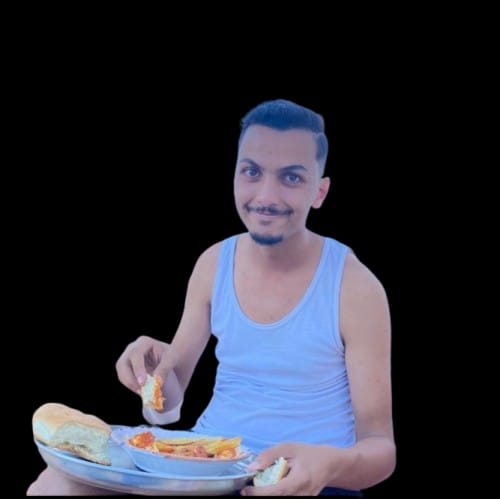

The Global Liberation Initiative is a non-profit policy advocacy organization dedicated to the full global decriminalization and regulated legalization of all substances — liberating billions from the grip of the failed War on Drugs.
For over a century, global drug prohibition has failed on every measurable front. It has not reduced addiction rates, curbed supply chains, or made communities safer. What it has done is fuel mass incarceration, empower criminal organizations, and strip billions of human beings of their fundamental right to bodily autonomy.
The Global Liberation Initiative exists to change this — permanently and globally. We advocate for evidence-based, human rights–centered drug policy reform at the highest levels of international governance: the United Nations, the WHO, the International Narcotics Control Board, and beyond.
Our mission is unambiguous: make all drugs legal globally, regulated responsibly, and liberate the world from the violence, incarceration, and systemic injustice that prohibition has wrought.
Our Strategic Pillars"The prohibition of substances does not eliminate their use — it merely criminalizes the user and enriches the criminal."— Yahya Mdallel, CEO & Founder, Global Liberation Initiative
The 1961 Single Convention on Narcotic Drugs, the backbone of global prohibition, was drafted in a Cold War context that no longer exists. It is time to replace it.
Criminalization prevents people from seeking help. Decriminalization and legalization reduce overdose deaths, HIV transmission, and addiction rates — as proven in Portugal, Switzerland, and Canada.
More than 50 million people sit in prisons globally for non-violent drug offenses. This is not justice — it is systemic oppression disguised as policy.
A regulated global drug market would generate trillions in tax revenue, eliminate criminal empires, and fund the very addiction-treatment infrastructure the world desperately needs.
We work directly with UN member states and treaty bodies to renegotiate the international drug conventions — replacing prohibition with a framework of regulated legalization, public health priority, and human dignity.
Every policy position we publish is grounded in peer-reviewed research, longitudinal public health studies, and comparative legal analysis from jurisdictions that have pursued reform.
Legalization without regulation is chaos. Our team of economists, pharmacologists, and legal scholars designs comprehensive regulatory frameworks that ensure safety, purity standards, and responsible commercial governance.
Change does not happen in conference rooms alone. We partner with civil society organizations, community leaders, and affected populations on every continent to build the democratic mandate for global reform.
Our founding team combines decades of experience in international policy, public health advocacy, and global organizational leadership.

Chief Executive Officer & Founder
Yahya Mdallel is the visionary architect of the Global Liberation Initiative. With a background in international law and human rights advocacy, he has spent his career challenging unjust global systems and building coalitions capable of dismantling them. His singular conviction — that drug prohibition is the defining civil rights crisis of our era — drives everything GLI does.
Co-Founder & Chief Strategy Officer
Fedi Chaibi brings unparalleled strategic acumen to the GLI. A former consultant to international development agencies, Fedi specializes in translating bold policy visions into concrete, executable global strategies. He leads GLI's engagement with UN treaty bodies and heads the organization's international partnership program.
Co-Founder & Chief Research Officer
Nidhal Derwich is the intellectual engine of the Global Liberation Initiative. Holding advanced degrees in public health and pharmacology, Nidhal oversees all of GLI's research output — ensuring that every advocacy position is backed by unimpeachable scientific evidence. Her landmark white paper on global regulated markets is cited by policymakers on four continents.
Whether you are a researcher, a policymaker, a journalist, an activist, or simply a citizen who believes in human freedom — there is a place for you in this movement.
Your data is never sold or shared. GLI is a registered non-profit advocacy organization.
We have received your registration. A member of our team will be in touch within 48 hours.